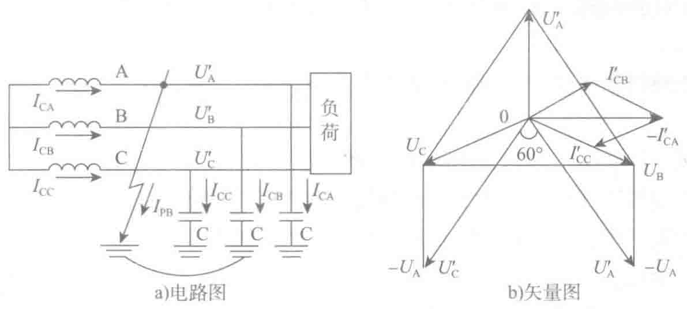
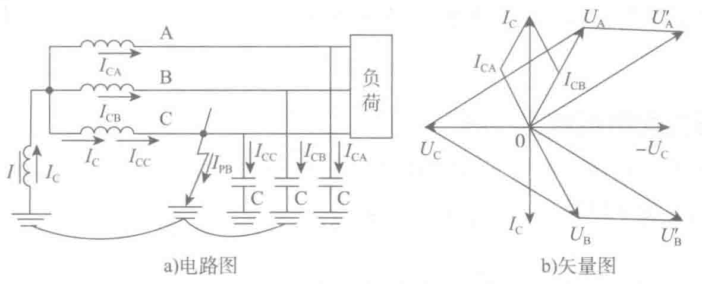

时，C相对地电压U′C=UC−UA=UCA。以上公式意味着B、C对地电压由正常运行的相电压升高为线电压。所以电气绝缘应该按照线电压来考虑。

- 线电压：A相接地时，线电压没有发生改变，因此三相用电设备不会受到影响。但不允许这种工况长期运行，如果再有一相发生短路形成大的短路电流是不允许的。
2. 中性点经消弧线圈的运行方式
为了防止3～63kV电网单相接地短路时在接地点产生断续电弧，引起过电压，在单相接地电容电流IC大于一定值（3～10kV系统中IC大于30A，20kV及以上系统中时IC大于10A）时，电力系统的电源中性点必须采用经消弧线圈接地的运行方式。
中性点经消弧线圈接地（谐振接地）是指在系统中性点加一特殊电抗器接地。消弧线圈是一具有铁芯的电感线圈，其阻值小，电抗很大。当发生单相接地故障时，可产生一个电感电流，此值与电容电流值相近，方向相反。因此可对电容电流进行补偿。如果消弧线圈选用合适，能使得接地电流小于最小生弧电流，那么电弧就不会产生，亦不会产生谐振过电压。

非有效接地系统或小电流接地系统的优缺点可总结如下。
优点：
- 供电可靠性高。由于系统单相接地时，没有形成电源的短路回路，而是经过三相线